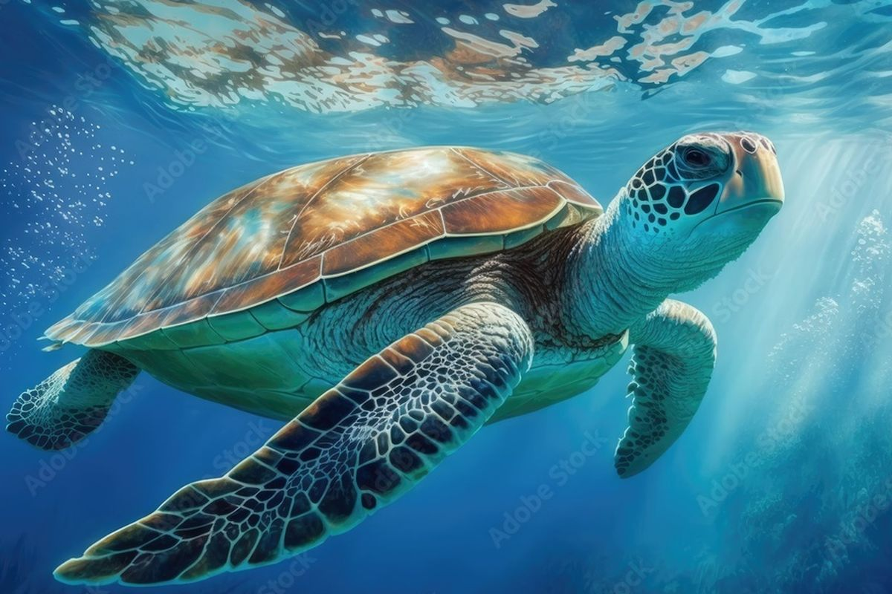
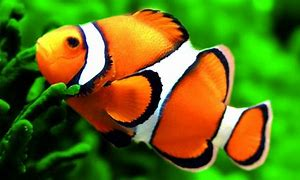
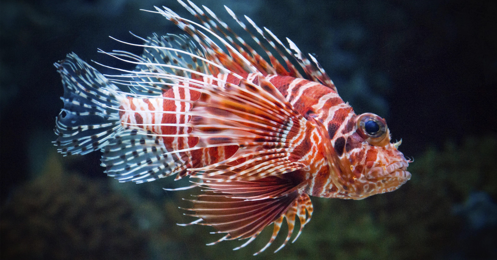
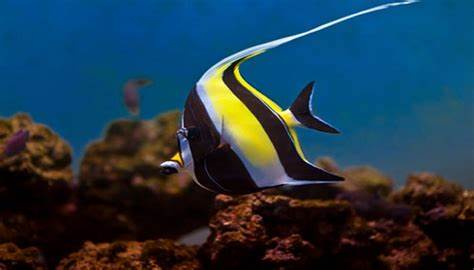

Penyu adalah hewan yang banyak ditemukan bertelur di beberapa pesisir pantai di Indonesia sejak dahulu

Ikan Badut ini dapat dikenali dengan warna jingganya ikan ini tumbuh mencapai 8 cm serta termasuk ikan terpopuler didunia

Lion Fish atau disebut juga ikan lepu ayam, Corak tubuhnya bergaris merah, marun, coklat, oranye, hitam dan putih. Bentuk siripnya berduri seperti kipas atau rumbai-rumbai.

Ikan Moorish Idol adalah salah satu ikan yang cukup populer di kalangan para hobi ikan hias karena bentuknya yang unik dan pola warnanya yang menarik